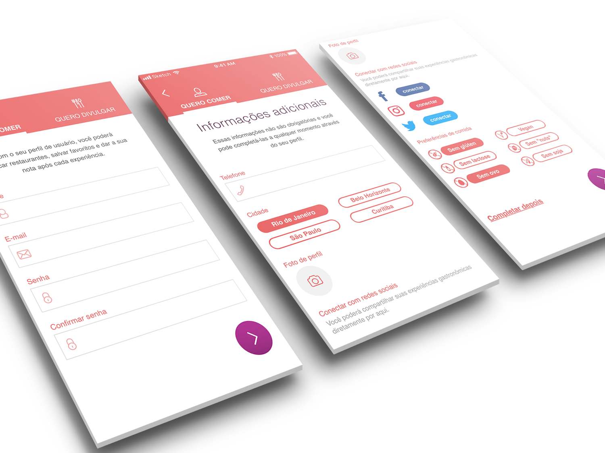
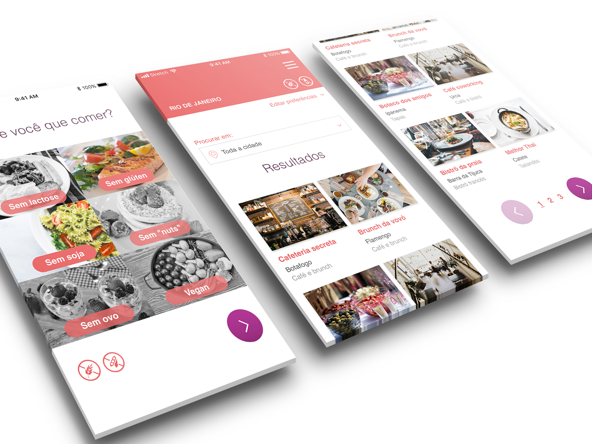

September 20th, 2019

Boa Pedida is a fictional Brazilian startup project of an app to promote and find restaurants that offer food for people with dietary restrictions, such as gluten-free, lactose-free and vegan.
The two main clients of the app were restaurant owners who wanted to promote their business and restaurant seekers who wanted to find a place to eat.
The job was to take the available information about the target audience and to propose the user flow and interface design that would be used in the first iteration of the product.
Qualitative data gathered through online polls and questionnaires was used to form the proposed personas user journey maps. The following image is one of the user journey maps we defined for the persona we called Maria.
Using the already defined style guidelines — mainly the logo color pallet, I came up with an interface design that reflected the cheerful and cool feeling that should be communicated.
At the same time, I aimed for a balance between being clean and informative, following the principle of progressive disclosure when displaying the restaurant’s information. For example, neighborhood is an essential information about a restaurant when it comes to large Brazilian cities, where the public transport is not great and there’s a lot of traffic. Therefore, the neighborhood is shown with the restaurant thumbnail in the search list. Other information, such as working hours and price range, are important but secondary, so they are shown only on the restaurant page.
The following images show some of the resulting screens.
 